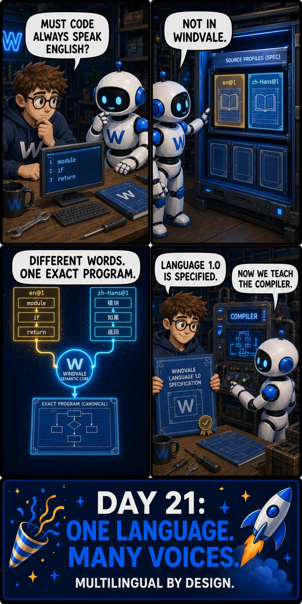

Latest story
One language. Many voices.
Windvale Language 1.0 now has an exact source specification. Its multilingual source-profile design separates a program's meaning from the human-language words used to express it: en@1 is the canonical reference profile, while zh-Hans@1 remains a draft design. Compiler implementation comes next; this story does not present the new profiles as compiled or qualified.
Read the comic transcript
- A human collaborator looks from an English source listing to the Windvale robot and asks, “Must code always speak English?”
- The robot opens a specification cabinet containing the
en@1source profile, the draftzh-Hans@1profile, and room for more profiles. It answers, “Not in Windvale.” - The English keywords
module,if, andreturnand their Simplified Chinese counterparts模块,如果, and返回converge through the Windvale semantic core into one canonical program. The panel reads, “Different words. One exact program.” - The human holds the completed Language 1.0 specification while the robot begins configuring the compiler. The human says, “Language 1.0 is specified.” The robot answers, “Now we teach the compiler.”
- The closing banner reads, “Day 21: One language. Many voices. Multilingual by design.”
